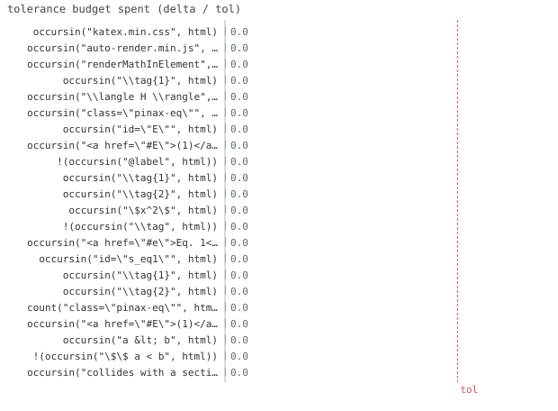

22/22 passed · 0.27s
| id | label | got | want | Δ vs tol (kind) | |
|---|---|---|---|---|---|
| ✓ | t380 | occursin("katex.min.css", html) @ test_equations.jl:18 code | 1.0 | 1.0 | 0.0 vs 0.5 (abs) |
| ✓ | t381 | occursin("auto-render.min.js", html) @ test_equations.jl:19 code | 1.0 | 1.0 | 0.0 vs 0.5 (abs) |
| ✓ | t382 | occursin("renderMathInElement", html) @ test_equations.jl:20 code | 1.0 | 1.0 | 0.0 vs 0.5 (abs) |
| ✓ | t383 | occursin("\\tag{1}", html) @ test_equations.jl:31 code | 1.0 | 1.0 | 0.0 vs 0.5 (abs) |
| ✓ | t384 | occursin("\\langle H \\rangle", html) @ test_equations.jl:32 code | 1.0 | 1.0 | 0.0 vs 0.5 (abs) |
| ✓ | t385 | occursin("class=\"pinax-eq\"", html) @ test_equations.jl:33 code | 1.0 | 1.0 | 0.0 vs 0.5 (abs) |
| ✓ | t386 | occursin("id=\"E\"", html) @ test_equations.jl:44 code | 1.0 | 1.0 | 0.0 vs 0.5 (abs) |
| ✓ | t387 | occursin("<a href=\"#E\">(1)</a>", html) @ test_equations.jl:45 code | 1.0 | 1.0 | 0.0 vs 0.5 (abs) |
| ✓ | t388 | !(occursin("@label", html)) @ test_equations.jl:46 code | 1.0 | 1.0 | 0.0 vs 0.5 (abs) |
| ✓ | t389 | occursin("\\tag{1}", html) @ test_equations.jl:57 code | 1.0 | 1.0 | 0.0 vs 0.5 (abs) |
| ✓ | t390 | occursin("\\tag{2}", html) @ test_equations.jl:58 code | 1.0 | 1.0 | 0.0 vs 0.5 (abs) |
| ✓ | t391 | occursin("\$x^2\$", html) @ test_equations.jl:69 code | 1.0 | 1.0 | 0.0 vs 0.5 (abs) |
| ✓ | t392 | !(occursin("\\tag", html)) @ test_equations.jl:70 code | 1.0 | 1.0 | 0.0 vs 0.5 (abs) |
| ✓ | t393 | occursin("<a href=\"#e\">Eq. 1</a>", html) @ test_equations.jl:82 code | 1.0 | 1.0 | 0.0 vs 0.5 (abs) |
| ✓ | t394 | occursin("id=\"s_eq1\"", html) @ test_equations.jl:93 code | 1.0 | 1.0 | 0.0 vs 0.5 (abs) |
| ✓ | t395 | occursin("\\tag{1}", html) @ test_equations.jl:106 code | 1.0 | 1.0 | 0.0 vs 0.5 (abs) |
| ✓ | t396 | occursin("\\tag{2}", html) @ test_equations.jl:107 code | 1.0 | 1.0 | 0.0 vs 0.5 (abs) |
| ✓ | t397 | count("class=\"pinax-eq\"", html) == 2 @ test_equations.jl:108 code | 1.0 | 1.0 | 0.0 vs 0.5 (abs) |
| ✓ | t398 | occursin("<a href=\"#E\">(1)</a>", html) @ test_equations.jl:122 code | 1.0 | 1.0 | 0.0 vs 0.5 (abs) |
| ✓ | t399 | occursin("a < b", html) @ test_equations.jl:133 code | 1.0 | 1.0 | 0.0 vs 0.5 (abs) |
| ✓ | t400 | !(occursin("\$\$ a < b", html)) @ test_equations.jl:134 code | 1.0 | 1.0 | 0.0 vs 0.5 (abs) |
| ✓ | t401 | occursin("collides with a section/figure id", html) @ test_equations.jl:146 code | 1.0 | 1.0 | 0.0 vs 0.5 (abs) |

⤓ downloadPinax.reset!()
html = read(Pinax.render(; out=site("k")), String)
@test occursin("katex.min.css", html)@test occursin("auto-render.min.js", html)@test occursin("renderMathInElement", html)Pinax.reset!()
html = read(Pinax.render(; out=site("eq1")), String)
@test occursin("\\tag{1}", html) # numbered for KaTeX@test occursin("\\langle H \\rangle", html) # math content preserved@test occursin("class=\"pinax-eq\"", html) # wrapped in an anchored spanPinax.reset!()
html = read(Pinax.render(; out=site("eqref")), String)
@test occursin("id=\"E\"", html) # equation anchored by its label@test occursin("<a href=\"#E\">(1)</a>", html) # @ref resolves to the number, even forward@test !occursin("@label", html) # the @label token is consumedPinax.reset!()
html = read(Pinax.render(; out=site("eqmulti")), String)
@test occursin("\\tag{1}", html)@test occursin("\\tag{2}", html)Pinax.reset!()
html = read(Pinax.render(; out=site("inline")), String)
@test occursin("\$x^2\$", html) # single-$ survives for client-side KaTeX@test !occursin("\\tag", html) # not numberednb(kind, c) = kind === :equation ? "Eq. $(c.equation)" : "Sec. $(c.section)"
html = read(Pinax.render(; out=site("eqover")), String)
@test occursin("<a href=\"#e\">Eq. 1</a>", html) # overridden equation label in @refPinax.reset!()
html = read(Pinax.render(; out=site("eqauto")), String)
@test occursin("id=\"s_eq1\"", html) # <section anchor>_eq<k>Pinax.reset!()
html = read(Pinax.render(; out=site("eqcap")), String)
@test occursin("\\tag{1}", html)@test occursin("\\tag{2}", html)@test count("class=\"pinax-eq\"", html) == 2Pinax.reset!()
html = read(Pinax.render(; out=site("eqxref")), String)
@test occursin("<a href=\"#E\">(1)</a>", html)Pinax.reset!()
html = read(Pinax.render(; out=site("eqesc")), String)
@test occursin("a < b", html) # escaped in the serialized HTML...@test !occursin("\$\$ a < b", html) # ...not raw (the HTML parser would mis-read `<`)Pinax.reset!()
html = read(Pinax.render(; out=site("eqdup")), String)
@test occursin("collides with a section/figure id", html){kind=link}